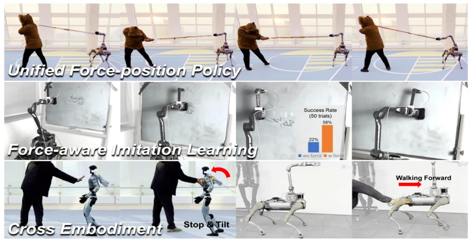
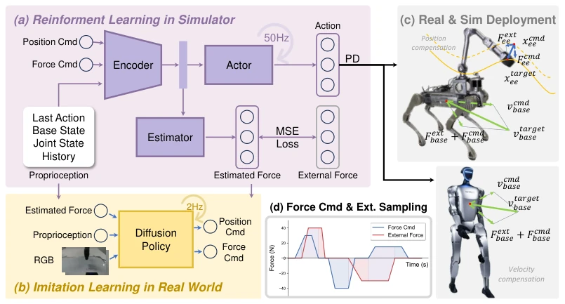
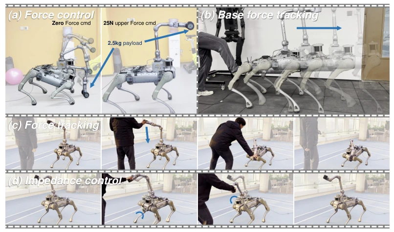

这篇论文试图解决足式机器人操作中最头疼的问题：没有力传感器怎么控制力？作者搞了个统一策略，用 RL 从历史状态猜力，再调位置速度。亮点是确实没装力传感器，还能在四足和双足上跑，39.5% 的成功率提升看着挺香。但槽点也不少：力估计在高频交互和边缘位置会崩，Sim-to-Real 的 Y 轴误差明显，而且所谓的“统一”其实本质还是阻抗控制加 RL 拟合，没跳出传统控制框架太多。对于工业级重负载场景，这估计力精度可能还不够看，不过作为无感测的基座策略，算是个不错的尝试，至少比纯靠眼睛猜力要靠谱点。
This paper attempts to address the most challenging problem in legged robot manipulation: how to control force without force sensors? The authors propose a unified strategy that uses RL to infer force from historical states and then adjusts position and velocity. The highlight is that it indeed operates without force sensors, functioning on both quadruped and bipedal robots, with a 39.5% success rate improvement being quite notable. However, there are also significant limitations: force estimation degrades in high-frequency interactions and at boundary positions, the Sim-to-Real Y-axis error is evident, and the so-called 'unified' approach is essentially impedance control combined with RL fitting, not deviating much from the traditional control framework. For industrial heavy-load scenarios, this force estimation accuracy may be insufficient; however, as a sensorless base strategy, it represents a commendable attempt, at least more reliable than purely visual force estimation.
When legged robots perform loco-manipulation, interacting with the environment is the norm, but traditional control relies on precise modeling, and contact force modeling is often constrained by hardware limitations. Existing visual motion strategies mostly learn position or force independently, neglecting joint modeling [9]. Although trajectory-based imitation learning involves large data volumes [13, 16, 17], it lacks contact information, resulting in poor performance on tasks such as blackboard erasing. This highlights the limitations of position control, necessitating the integration of force perception. This paper aims to propose a unified strategy requiring no force sensors to address the poor strategy generalization caused by missing contact information, particularly achieving force control without force sensing hardware. While existing works such as [11, 12] introduce tactile sensing, they rely on additional sensors; this paper attempts to extract force information from proprioception.

Figure 1: We present a unified force-position policy for legged robots that enables diverse loco- manipulation behaviors, including position tracking, force application, and compliant interactions (top). When used for imitation learning data collection, the policy’s learned internal force estimator provides force-aware demonstrations, improving model performance in contact-rich tasks without external force sensors (middle). Results on quadruped and humanoid robots demonstrate the policy’s versatility and robustness (bottom).
The overall workflow is divided into two stages: simulation training and real-world deployment. First, a unified control framework is constructed based on the impedance control formula $F = K(x - x_{des})$, transforming force control into a position/velocity compensation problem. The RL policy input includes proprioceptive states, historical actions, and position/force commands, outputting joint targets. The core innovation lies in the built-in force estimator, which utilizes historical states to predict external forces and reaction forces without requiring physical sensors. Training adopts a two-stage approach: first learning whole-body reaching and locomotion, then introducing random force commands and perturbations, combined with domain randomization to enhance robustness. During deployment, the strategy not only controls directly but also serves as a teleoperation base to collect 'force-aware' data, training diffusion policies for imitation learning, thereby achieving a closed loop from low-level force control to high-level task execution. Furthermore, for quadruped and humanoid robots, base velocity compensation and end-effector force compensation logic were adjusted separately to ensure cross-embodiment generalization capability. The state estimator employs an MLP network, optimizing force and position prediction accuracy via MSE Loss, guaranteeing strategy stability under complex contact scenarios.

Figure 2: Method Overview. (a) Architecture of the unified position-force policy trained via rein- forcement learning to track position and force commands under external disturbances. (b) Force- aware imitation learning enabled by demonstrations collected using our learned policy, without re- quiring force sensors. (c) Illustration of position and velocity compensation for force interactions modeled at both the end-effector and the robot base. (d) Visualization of sampled force commands and disturbances used to simulate diverse contact scenarios during policy training.
Validated on Unitree B2-Z1 and G1. In simulation, position tracking error is <0.1m, and force estimation error is 5-10N. Real-world force control error is <10N. The core experiment is force-aware imitation learning; compared to a pure visual baseline, success rate improved by approximately 39.5% on 4 contact tasks including blackboard erasing and cabinet opening. Ablation studies show force estimation is critical in occlusion scenarios. Cross-embodiment experiments demonstrate the strategy's transferability. However, Y-axis force control error is significant, and estimation accuracy degrades under high-frequency interaction. Additionally, basic skills such as force tracking and impedance control were tested to verify the strategy's versatility. The experiments cover various scenarios ranging from static force control to dynamic interaction, proving the framework's generalizability.

Figure 5: Diverse skills facilitated by our policy. (a) Force control: The robot counteracts gravity to support a payload when given a 25N force command. (d) Base force tracking: The robot responds compliantly to pushes on its base, enabling intuitive human guidance. (c) Force tracking: The robot tracks a zero-force command by minimizing external force interactions. (d) Impedance control: The robot adjusts its whole-body posture to counteract and comply with external disturbances.